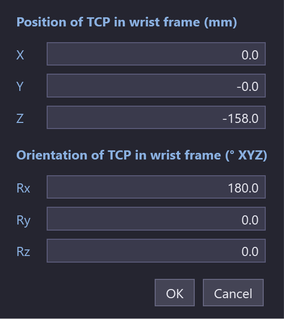

The TCP
The TCP (tool centre point) is the point of the gripper that the robot program moves. For a suction gripper it is where the gripper touches the part.
The automatic TCP
For a gripper from the catalog, FRobot sets the TCP itself:
-
Position: the centre of the suction cups, on the cups' surface, where they touch the part.
-
Orientation: that of the robot’s tool frame.
The TCP is drawn as a small sphere with red, green and blue axes (X, Y, Z). View ▸ TCP Legend shows which colour is which. The TCP switch in the Display panel shows or hides it.
Setting the TCP by hand
The TCP Offset dialog
Click the small sphere at the TCP in the 3D view. The TCP Offset dialog opens; this is the only way to reach it.

| Field | What it is |
|---|---|
Position of TCP in wrist frame (mm): X, Y, Z |
Where the TCP is, from the robot’s flange |
Orientation of TCP in wrist frame (° XYZ): Rx, Ry, Rz |
How the TCP’s axes are turned, in degrees |
Click OK to apply, or Cancel; a click outside the dialog also cancels.
-
OK with a bad number: the cursor goes back to that field.
-
What moves: the robot stays where it is and the TCP frame moves.
-
The waypoints: with a planned cycle, they are solved again for the new TCP, as after a gripper change: see Choosing a gripper yourself.
|
Note
|
For a gripper from the catalog, a TCP set by hand is not kept. Opening the cell config or the solution again, or starting FRobot, mounts the gripper with its catalog TCP. A TCP set by hand stays only for a tool mesh mounted by hand. |
Snap TCP
settings ▸ Tooling ▸ Snap TCP sets the TCP by clicking on the gripper.
-
Click Snap TCP.
-
Click the point on the gripper, for example a nozzle tip.
The status line confirms TCP set to (x, y, z) mm — now the working TCP. Clicking off the gripper cancels.
|
Note
|
After changing the TCP of a planned cycle, click recompute to plan the cycle with the new TCP. The phase strip is not checked again until then. |